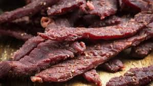

Beef Jerky

Description
There is nothing fancy about this. I am making it up off
the top of my head, using a pre-made jerky seasoning
I got for Christmas. This is where I should be telling
stories of how when I was a young child I fell in love with
jerky.
Ingredients
- 5 lbs ground meat (beef, venision, turkey, snake, etc.)
- 1 packet jerky cure mix
- 1 packet jerky season mix
Directions
- Pre-heat smoker or oven to 185 degrees fahrenheit
- Combine all ingredients in large mixing bowl
- Create 1/4" thick strips using jerky gun
- Cook jerky for 4-6 hours. Meat should be dry to the touch, but not scorched to oblivion